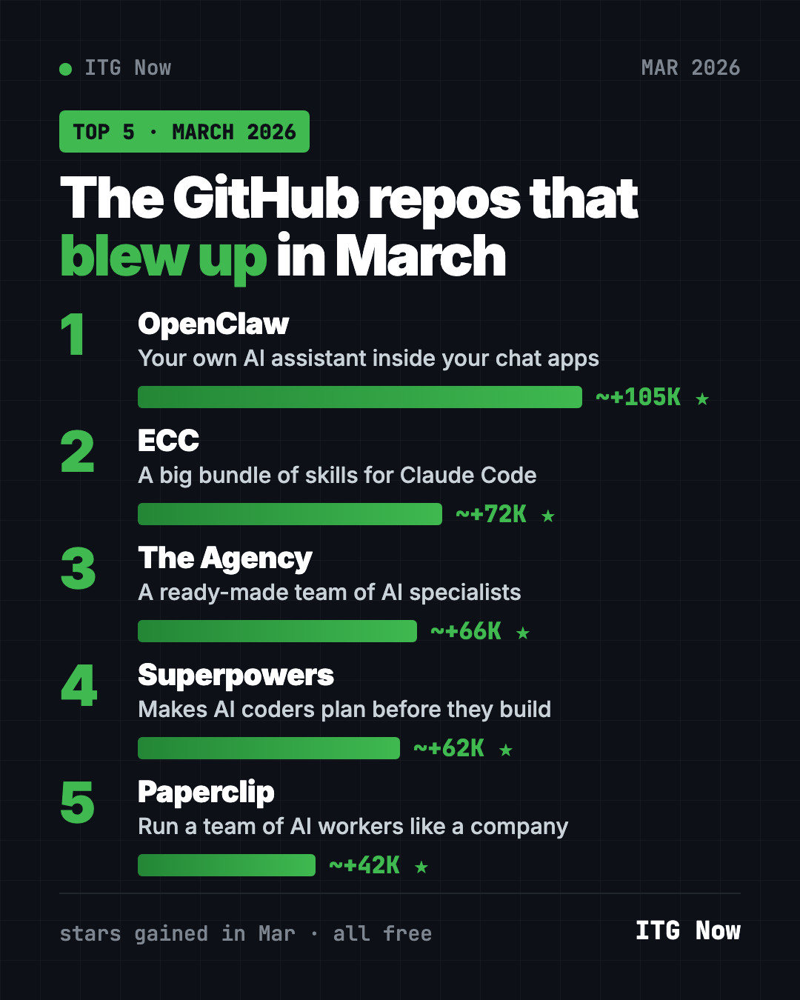
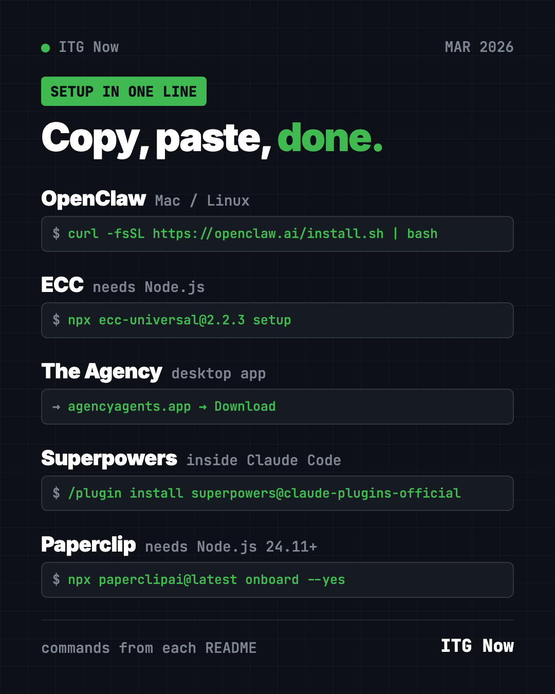
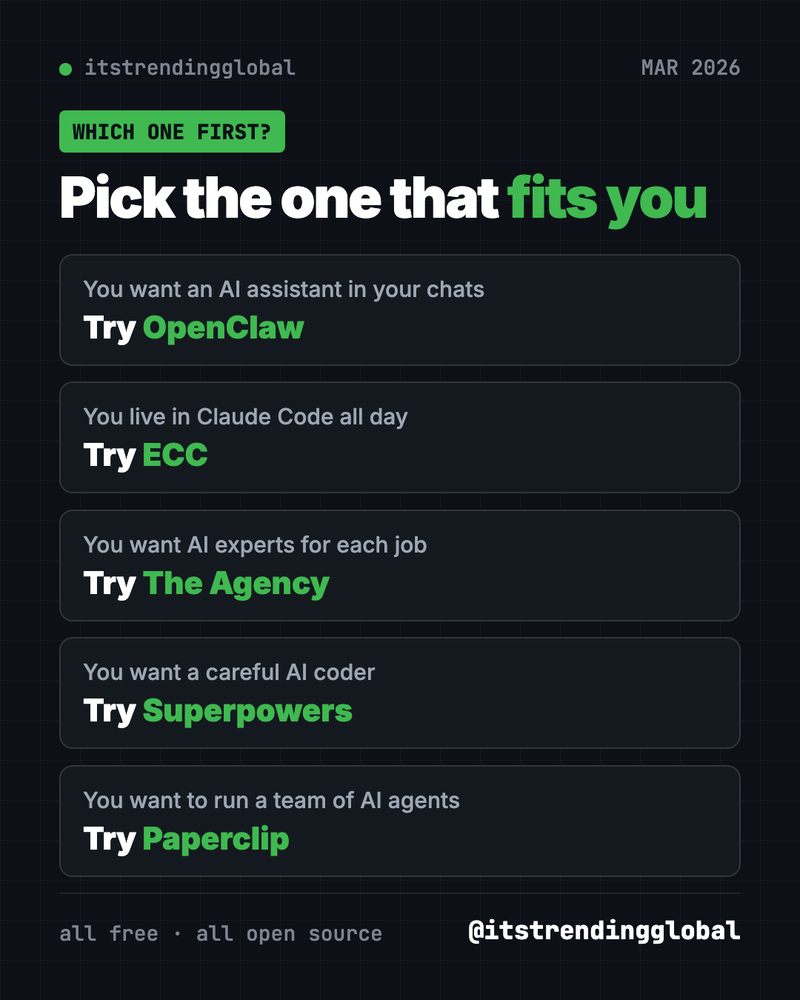

Best GitHub Repos of March 2026 (Free AI Tools)
- Published 15 Oct 2026
- Updated 16 Oct 2026
- 10 min read
- By the ITG Now team
In this guide (9)
- Key takeaways
- The 5 trending GitHub repos of March 2026 at a glance
- 1. OpenClaw: the AI assistant that kept winning
- 2. ECC: a giant upgrade pack for Claude Code
- 3. The Agency: a ready-made team of AI specialists
- 4. Superpowers: its biggest month so far
- 5. Paperclip: run AI agents like a company
- Which one should you try first?
- FAQ
The best GitHub repos March 2026 had to offer were OpenClaw, ECC, The Agency, Superpowers and Paperclip. The theme was clear: people stopped using one AI helper and started building whole teams of them.
If you are new here, a GitHub star is like a bookmark or a "like." A big jump in stars in one month is a strong sign people want something. Below, each repo gets everyday uses, the real setup command from its README, and a ready prompt for an AI helper.
Key takeaways
- OpenClaw topped the chart for the third month running, with about 105,000 new stars in March 2026.
- ECC is a huge add-on pack for Claude Code that makes it plan, test, review and remember.
- The Agency gives you a ready-made team of AI specialists, from a TikTok strategist to a code reviewer.
- Superpowers had its best month yet, gaining about 62,000 stars.
- Paperclip lets you run a group of AI agents like a small company, with goals and budgets.

The 5 trending GitHub repos of March 2026 at a glance
| Repo | What it does | Who it's for | Free? | Works with |
|---|---|---|---|---|
| OpenClaw | AI assistant inside your chat apps | Anyone who wants AI to do tasks | Yes (MIT), AI model may cost | Mac, Windows, Linux, phone apps |
| ECC | Big pack of skills, agents and rules for AI coders | Heavy Claude Code users | Yes (MIT) | Claude Code, Codex, Cursor, OpenCode |
| The Agency | Ready-made AI specialists with job roles | Solo founders, marketers, builders | Yes (MIT) | Claude Code, Cursor, Codex, Gemini CLI and more |
| Superpowers | Plan-first routine for AI coders | Anyone using an AI coding helper | Yes (MIT) | Claude Code, Codex and more |
| Paperclip | Dashboard to run a team of AI agents | People running projects with AI | Yes (MIT), AI models may cost | Mac, Windows, Linux (in your browser) |
Star gains are rough March 2026 numbers. Total star counts below were checked on GitHub on October 16, 2026.
💡 Tip: Several steps use the "terminal," a plain text window for commands. Mac: open Terminal. Windows: open PowerShell. Paste, press Enter, wait.
1. OpenClaw: the AI assistant that kept winning
Stars: about +105K in March · about 392K total
What it is: OpenClaw is a free, open-source AI assistant that runs on your own computer. You talk to it through apps like WhatsApp, Telegram, Slack and iMessage. It can act for you, like sorting files or drafting replies. Your memory and passwords stay on your device. You choose which AI model powers it.
Who it's for: Anyone who wants a helper that works where they already chat.
How you'd use it:
- Ask it from your phone to find a file on your laptop and send a summary.
- Let it draft replies in Slack that you check before sending.
- Pair it with Paperclip (number 5 below) if you want a whole team of agents.
Install it: Copy and paste this on Mac or Linux:
curl -fsSL https://openclaw.ai/install.sh | bash
On Windows, paste this into PowerShell:
iwr -useb https://openclaw.ai/install.ps1 | iex
A setup wizard starts on its own. Finish it, then run openclaw dashboard to open the control page.
Or let Claude or Codex do it: Claude Code and OpenAI Codex are AI helpers that can run setup steps for you. Paste this into one:
Install OpenClaw from https://github.com/openclaw/openclaw with its official
installer. Explain each setup question in plain words, then open the dashboard
and send one test message with me.
See OpenClaw on GitHub · Read our full OpenClaw guide
2. ECC: a giant upgrade pack for Claude Code
Stars: about +72K in March · about 280K total
What it is: ECC started life as "everything-claude-code." It is a free bundle of skills, agents, commands and rules that change how an AI coding helper works. The README sums up its loop as plan, test, build, review, check, remember, improve. It works best with Claude Code today. It also has paths for Codex and Qoder, and lighter versions for Cursor, OpenCode, Gemini and others.
Who it's for: People who use Claude Code every day and want it more careful and consistent.
How you'd use it:
- Have it write a plan and tests before it changes your app.
- Ask it to review its own work with fresh eyes before you accept it.
- Let it save lessons from good sessions so it repeats what worked.
Install it: You need Node.js 18 or newer, Git, and Claude Code 2.1 or newer. Then copy and paste this:
npx ecc-universal@2.2.3 setup
Prefer to stay inside Claude Code? Paste these two lines there instead:
/plugin marketplace add https://github.com/affaan-m/ECC
/plugin install ecc@ecc
⚠️ Heads up: Pick one install method only. The README warns against stacking installs, and says to get ECC only from its official GitHub page, its npm packages, or ecc.tools.
Or let Claude or Codex do it:
Install ECC from https://github.com/affaan-m/ECC using its guided setup.
Check that Node.js, Git and Claude Code are new enough first. Pick the
standard personal setup, then show me how to confirm it is turned on.
See ECC on GitHub · Read our full ECC guide

3. The Agency: a ready-made team of AI specialists
Stars: about +66K in March · about 160K total
What it is: The Agency is a free collection of AI "agents," each with one job and its own style. The README says it was born from a Reddit thread. There are divisions for engineering, design, marketing, sales, product, testing, finance, game making and more. In marketing alone you will find a TikTok Strategist, an Instagram Curator and a Reddit Community Builder. You load one into your AI helper and it takes on that role.
Who it's for: Solo founders, freelancers and small teams who need many skills but have one person.
How you'd use it:
- Ask the Instagram Curator to plan a month of posts for your small shop.
- Have the Frontend Developer build a web page, then the Reality Checker review it.
- Use the Content Creator to turn one blog post into five social posts.
Install it: The easiest way is the free desktop app for Mac, Windows and Linux. Download it from the Agency Agents releases page. It installs agents into Claude Code, Cursor, Codex, Gemini CLI, OpenCode and others with a click. On a Mac with Homebrew, you can copy and paste this instead:
brew install --cask msitarzewski/agency-agents/agency-agents
Then just ask your AI helper to switch roles. The README's example:
Hey Claude, activate Frontend Developer mode and help me build a React component
Or let Claude or Codex do it:
Install the marketing agents from https://github.com/msitarzewski/agency-agents
into my AI coding tool, following the README. Then activate the Instagram
Curator and help me plan two weeks of posts for my business.
4. Superpowers: its biggest month so far
Stars: about +62K in March · about 300K total
What it is: Superpowers is a free skill pack that gives AI coding helpers a careful routine. It asks what you really want, shows you a short design, writes a plan, and then builds it in small, tested steps. It hands parts of the work to helper agents and checks their results. The skills start on their own, so there is nothing to memorize.
Who it's for: Anyone who wants an AI coder that thinks before it types.
How you'd use it:
- Plan a small app with it before a single file changes.
- Let it build while you are in a meeting, following the plan you approved.
- Combine it with ECC or The Agency if you want even more structure.
Install it: Inside Claude Code, copy and paste this:
/plugin install superpowers@claude-plugins-official
In the Codex app, open Plugins in the sidebar and add Superpowers from the Coding section.
Or let Claude or Codex do it:
Install Superpowers from https://github.com/obra/superpowers for my AI coding
tool following its README. Then brainstorm a simple budget tracker with me,
asking questions first, and show me the plan before any code.
See Superpowers on GitHub · Read our full Superpowers guide
5. Paperclip: run AI agents like a company
Stars: about +42K in March · about 103K total
What it is: Paperclip is a free app for managing a team of AI agents. Its README puts it simply: if OpenClaw is an employee, Paperclip is the company. You set a goal, "hire" agents for roles like CEO or engineer, set budgets, and watch the work from one dashboard. It runs on your own computer. No Paperclip account is needed.
Who it's for: People running a side project or small business who want several AI agents working toward one goal.
How you'd use it:
- Set a goal, like "launch a simple newsletter site," and let agents split up the work.
- Cap how much each agent can spend on AI, so costs don't surprise you.
- Review and approve the plan before the agents start.
Install it: You need Node.js 24.11 or newer. Then copy and paste this:
npx paperclipai@latest onboard --yes
Your settings and data stay on your computer.
Or let Claude or Codex do it: The README itself suggests asking your agent to install it:
Install Paperclip from https://github.com/paperclipai/paperclip following
its installation guide. Check my Node.js version first. Then open the
dashboard and help me set one small goal with a low budget.
⚠️ Heads up: Paperclip is free, but each agent uses an AI model. Set budgets so a busy team does not run up a big bill.
See Paperclip on GitHub · Read our full Paperclip guide
Which one should you try first?
- You want one helpful assistant: start with OpenClaw.
- You use Claude Code all day: add ECC.
- You need experts for many jobs: grab The Agency.
- You want careful, tested code: install Superpowers.
- You want a team of agents with a boss and a budget: try Paperclip.

For the news side of the month, read March 2026 in AI. Or compare with February's best GitHub repos.
FAQ
What were the best GitHub repos of March 2026?
By stars gained, the top five were OpenClaw, ECC, The Agency, Superpowers and Paperclip. OpenClaw led with about 105,000 new stars.
What is the difference between ECC and Superpowers?
Both make AI coders more careful. Superpowers focuses on one plan-first routine. ECC is a much bigger bundle of skills, agents, rules and hooks.
Are these trending GitHub repos free?
Yes, all five are free and MIT-licensed. The AI models they connect to, like Claude or OpenAI, may charge you for use.
What is an AI agent?
An AI agent is an AI helper that takes actions, like reading files or running commands, instead of only chatting. The Agency and Paperclip both help you use several agents at once.
Can I use The Agency without coding?
Yes. Its desktop app installs agents into your AI helper with a click. After that, you just ask the helper to switch into a role.
Keep reading

Trending GitHub Repos October 2026: The Top 5 So Far
The trending GitHub repos of October 2026 so far: a free Photoshop-style editor, an AI art studio, a big AI model for gaming PCs and more, explained.

Trending GitHub Repos This Week, Oct 5 2026: The Top 5
Trending GitHub repos this week Oct 5 2026: Matt Pocock's skills, the openGym workout tracker, e2e testing, HyperFrames video and claude-mem memory.

GitHub Trending September 28, 2026: Hindsight and Paperclip
GitHub trending September 28 2026: Hindsight, Paperclip, NVIDIA's OpenShell and a free 542-lesson AI course, with setup steps for each.